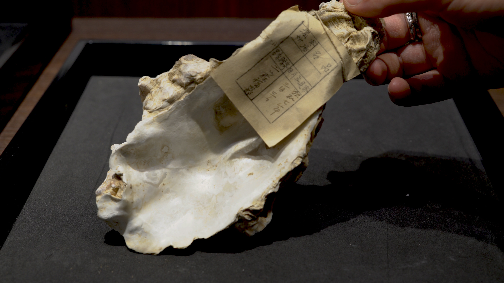
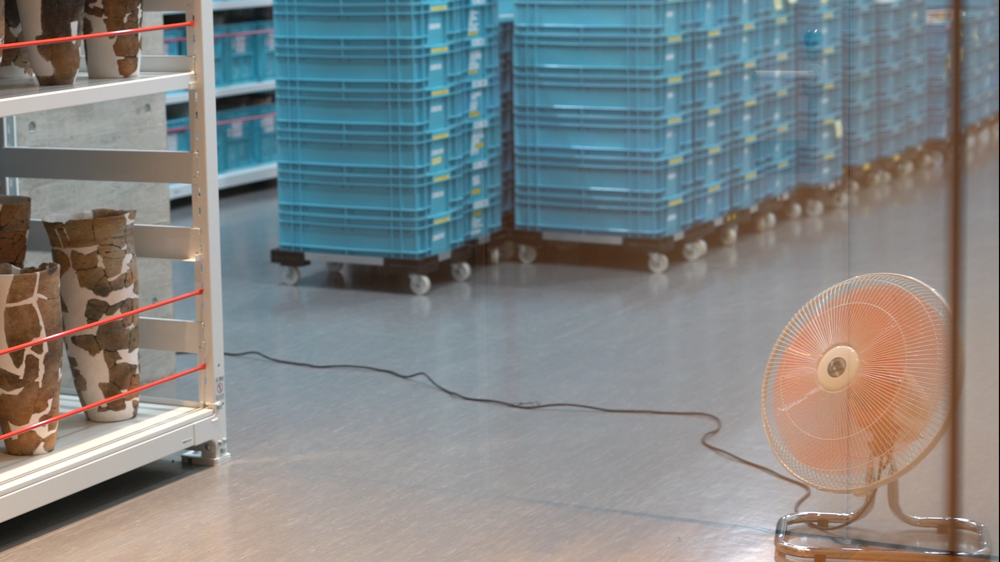

2-channel video with audio (00:15:46), borrowed windows, chestnut casings, clamps, coffee cans, concrete, construction felt, compressed polystyrene, embossed tetrapak, embossed recycled paper made from inkjet prints, notes and sketches; inkjet prints, milk bottles, paper making frame, pencil drawing on poster paper, pencil drawing on paper made with apple waste; PET bottles, plastic packaging from install, plastic shells, polystyrene packaging, reclaimed glass, reclaimed wood, shells, steel, tangerine peel, washi paper with embedded plastic housing from electronics.
A continuously-evolving exhibition investigating contemporary waste management through the framework of ancient waste disposal practices and the characters of the Selkie, a Scottish folktale of transformation, grief and revenge, and the Snow Child, an Aomori folktale about dissolving bodies, love and loss. Each week the exhibition was altered, sustaining a cycle between studio, site visits and public presentation; attending to the continued lives of objects beyond their primary function.
Supported by Aomori Contemporary Art Center. Translation by
Kyoka Kawai Arisawa. With thanks to Ayari Takeda, Yuka Keino, Aruma Toyama, Mari Osanai, Reiji Osanai, Gainz Co., Ltd.
Sannai Maruyama Jomon Culture Center,
Cultural Assets section, Aomori City Board of Education,
World Heritage management office, Board of Education, Shichinohe Town,
Rozure Resource Limited,
Aomori City Facility Disposal Facility,
Aomori Eco-creation Co., Ltd.,
Nishidagumi Co., Ltd.,
Korekawa Archaeological Institution,
Aomori City General Waste Final Disposal Site.
引き継ぐ: nets, eddies and cadences of habit
curated by Aya Murakami, Aomori Contemporary Art Center, 2023




"Instead of going straight from the beginning to the end like a single line, unknowing a destination, the artist
changes the form according to the situation, just as water changes into snow, hot water, or
steam. It is as if her own authorship is also left to the currents of the whirlpool. This is the first
time for the artist to create in this way, and it shows well the way she deals with the
world. It is a sensitivity that considers "making" from the perspective of permeability with
others, including non-humans. One cannot be "alone" in the sense that one is always
infuenced by the world created by someone who has come before.
In this light, the artist's perspective that connects the seemingly completely
different places of the Jomon "dump" and the modern waste disposal facility
through the medium of the snow being and selkie, characters that have been passed down from
mouth to mouth, become visible. What is common to those who collect and preserve artifacts
from the Jomon period and pass them on to future generations, to those who sort, process,
and recycle garbage collected from places, and to the countless people who have passed on
folk tales is the act of "hikitsugu" something that was not created by oneself but by someone
anonymous and passing it on to the next cycle. Unlike "production," which is believed to be
the creation of some economic value from scratch, these rather neglected practices are,
however, part of the "maintenance" of our world."
English translation of Immersed in a Whirlpool by Aruma Toyama, Published in Starquakes, 2024
,/I>


English translation of Immersed in a Whirlpool by Aruma Toyama, Published in Starquakes, 2024
,/I>